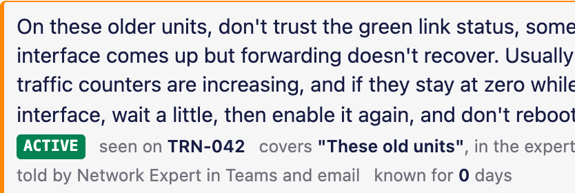
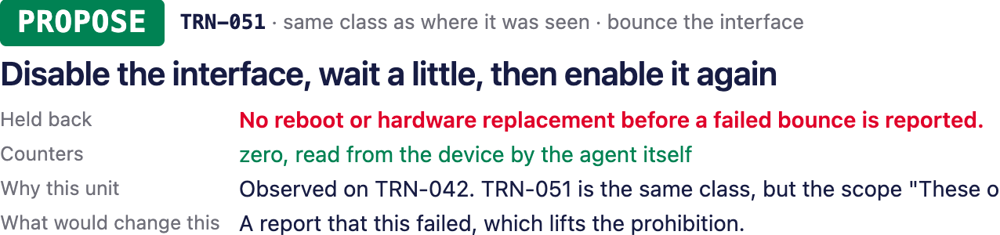

Since AI 2026 · Elisa's challenge
Veikko Vikkelä Field Engineer · 09:14
Changed the SFP on transmission node TRN-042. Link is up and alarms cleared, but traffic is still not coming back.
Erkki Expert Network Expert · 09:22
That's it. Disable the interface, wait a little, then enable it again. Don't reboot the whole unit unless that fails.
a Teams thread · Elisa's example file, unchanged
Silent context · Since AI 2026
Since AI 2026 · Elisa's challenge
Veikko Vikkelä Field Engineer · 09:14
Changed the SFP on transmission node TRN-042. Link is up and alarms cleared, but traffic is still not coming back.
Erkki Expert Network Expert · 09:22
That's it. Disable the interface, wait a little, then enable it again. Don't reboot the whole unit unless that fails.
Veikko Vikkelä 09:26
Is this documented somewhere?
Erkki Expert 09:27
Not that I know of. We've just learned it over the years.
a Teams thread · Elisa's example file, unchanged
Nobody writes it down. And there is a lot of it.
Silent context · Since AI 2026
So I built

the note, on the product's page · recorded 7.11.2026
Pinned to the unit it was about.
Who said it, where, and when.
Silent context · Since AI 2026
No extra work
The knowledge is captured as a by-product of the work itself.
The chat and the email, exactly as they are.
In the expert's own words, with who said it and when.
What to do next, and where that came from.
Silent context · Since AI 2026
Next time, the same fault

the agent's answer, on the product's page · recorded 7.11.2026
What to do, and why.
Silent context · Since AI 2026
Since AI 2026 · Elisa's challenge
Built at the event, in one weekend. Solo.
github.com/pkorrrhonen-cmd/silent-contextMIT · Petri Korhonen